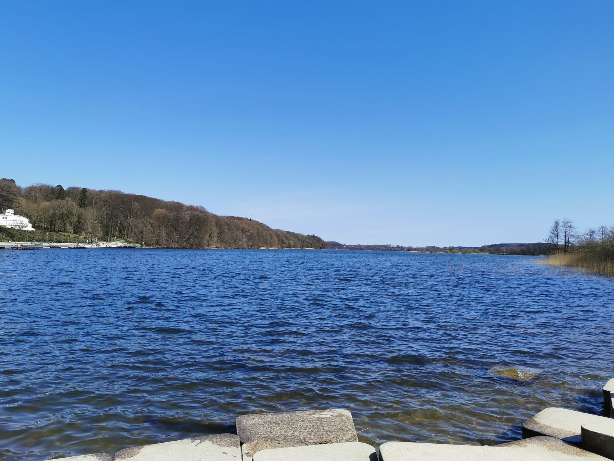
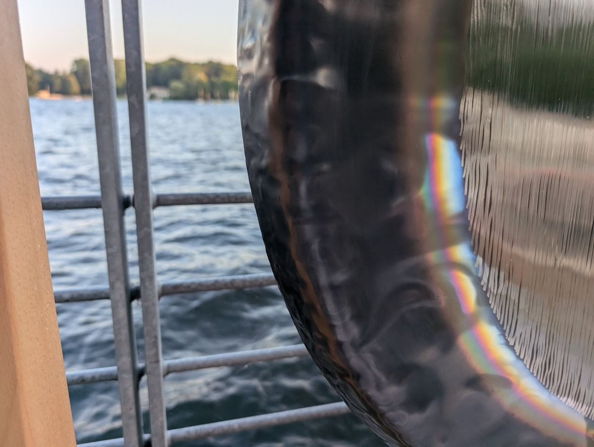

Programm
- Samstag: Die Veranstaltung fiel aufgrund der Wetterlage aus.
- Sonntag: Sadhana ab 06:00 Uhr, Yoga und Breathwalk.
Rückblick: Diese Veranstaltung ist vorbei. Laut damaliger Ankündigung fiel der Samstag wegen Gewitterneigung aus; am Sonntag sollte das Programm wie geplant stattfinden.

Ein gemeinsames Wochenende mit Yoga, Gong, Stille und Natur direkt am See in Bad Segeberg. Offen, herzlich und einfach organisiert.

Die Puja Gemeinschaft lud zum gemeinsamen Yoga und Gong ein. Mitwirkende und Zuhörende waren herzlich willkommen.
Ein Gemeinschaftsprojekt der Puja Gemeinschaft. Die Gestaltung dieser Seite stammt von Bernd Marnau, der bei der Organisation mitgewirkt hat.
Die Veranstaltung fand mit den Gongs nur bei trockenem Wetter statt. Treffpunkt war die Plattform am Großen Segeberger See. Sie war kostenfrei; über Spenden haben wir uns gefreut.